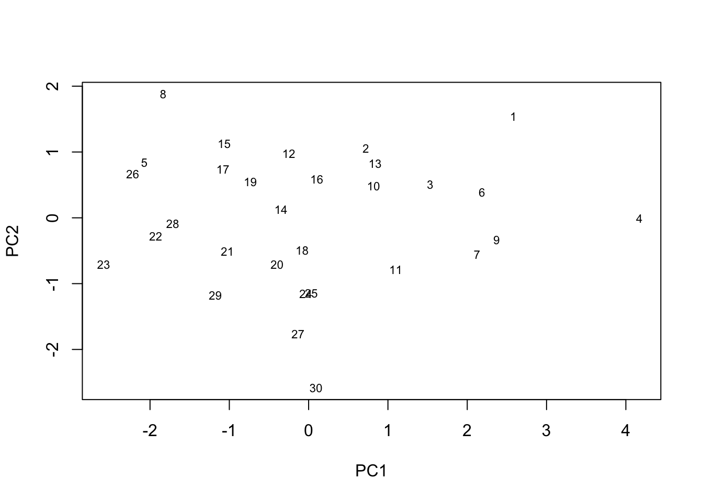
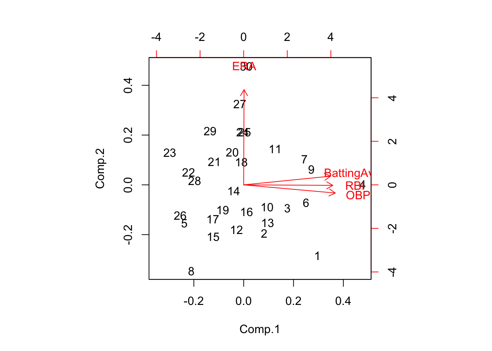
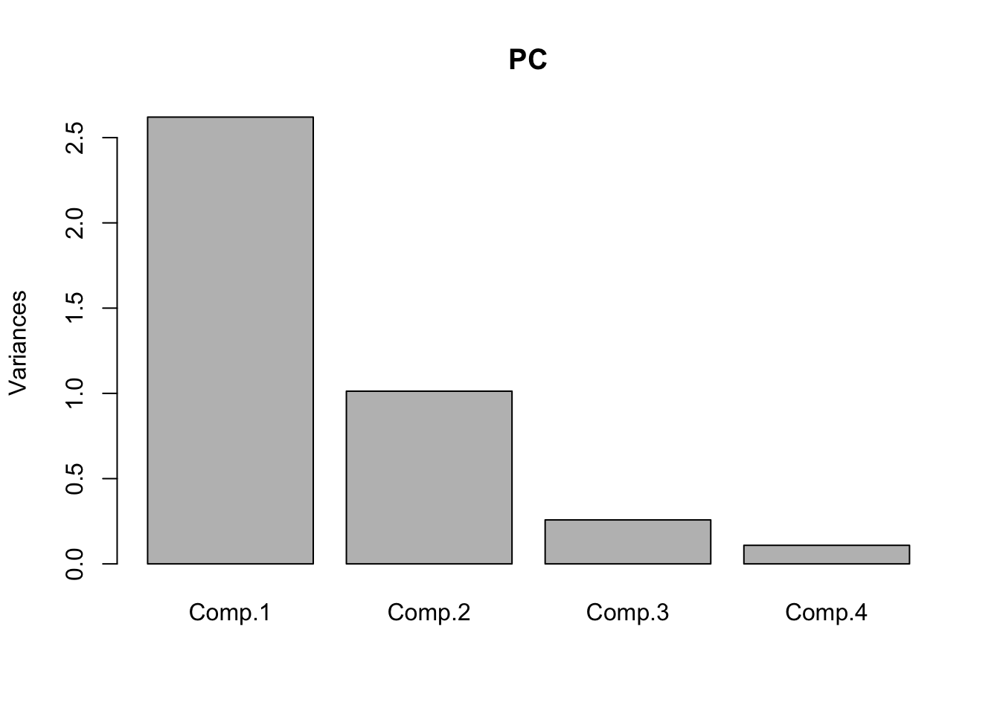

We will use a the baseball.csv dataset that has the
following variables:
X <- read.csv(file="baseball.csv", header=T)
Xs <- scale(X, scale=TRUE);Xs=Xs[,]
R <- cor(X)
eigen(R)## eigen() decomposition
## $values
## [1] 2.6204157 1.0128761 0.2578609 0.1088472
##
## $vectors
## [,1] [,2] [,3] [,4]
## [1,] 0.562532631 -0.090508308 -0.77273531 0.27972383
## [2,] 0.576567216 0.005275784 0.61416366 0.53883709
## [3,] 0.592554324 0.085109855 0.13561945 -0.78945744
## [4,] 0.002580206 -0.992238240 0.08538445 -0.09036655PC1 <- Xs %*% eigen(R)$vectors[,1]
PC2 <- Xs %*% eigen(R)$vectors[,2]
plot(PC1, PC2,type="n",xlab="PC1",ylab="PC2")
text(PC1,PC2,labels=rownames(X), cex=0.7)
According to the plot above, the higher-ranked players will have a higher PC1 and PC2 score (which makes sense because the loadings are positive). So players 1 and 4 are good at both batting and running, whereas player 30 was below average in running, and around average at batting. Then there are players such as 23 and 29 who are below average in both.
PC <- princomp(X, cor = TRUE)
print(loadings(PC), cutoff = 0.4) ##
## Loadings:
## Comp.1 Comp.2 Comp.3 Comp.4
## BattingAvg 0.563 0.773
## RBI 0.577 -0.614 0.539
## OBP 0.593 -0.789
## ERA 0.992
##
## Comp.1 Comp.2 Comp.3 Comp.4
## SS loadings 1.00 1.00 1.00 1.00
## Proportion Var 0.25 0.25 0.25 0.25
## Cumulative Var 0.25 0.50 0.75 1.00loadings(PC)[,2] ## BattingAvg RBI OBP ERA
## 0.090508308 -0.005275784 -0.085109855 0.992238240eigen(R)$vectors[,2] ## [1] -0.090508308 0.005275784 0.085109855 -0.992238240The first eigenvector tells us that if a player is good at batting, then they will have a higher PC score. The second eigenvector tells us that if a player is good at running, then they will have a higher PC score.
biplot(PC)
This biplot tells us that there are roughly “two groups” of variables: one for running and one for batting. The first group contains ERA and the second group contains BattingAverage, RBI, and OBP. So if the player is good at batting (and therefore has a higher batting average), then they will likely be on bases more often and bat in more homeruns. If a player is a good runner, then their expected number of runs will be higher.
screeplot(PC)
It looks like there are two “significant” cutoffs: after the first PC and another after the second. So this means that we could capture significant information using either only the first PC or using both the first and second.